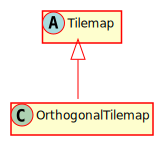

Hierarchy-Diagram
{kind=link}
Legend
 class
class
 abstract class
abstract class
Hierarchy
- Tilemap
- OrthogonalTilemap
Index
Constructors
Properties
- _ai
- _velocity
- active
- ai
Active - collided
With Tilemap - collider
Offset - collision
Map - collision
Shape - data
- emitter
- frozen
- group
- has
Physics - is
Collidable - is
Colliding - is
Player - is
Static - is
Trigger - layer
- moving
- name
- num
Cols - num
Rows - on
Ceiling - on
Ground - on
Wall - path
- pathfinding
- receiver
- rotation
- scene
- swept
Rect - tile
Size - tilesets
- trigger
Enters - trigger
Exits - trigger
Mask - tweens
- visible
Accessors
Methods
- addAI
- add
Physics - contains
- debug
Render - destroy
- disable
Physics - enable
Physics - finish
Move - freeze
- get
Col Row At - get
Dimensions - get
Last Velocity - get
Layer - get
Scene - get
Tile - get
Tile At Row Col - get
Tile At World Position - get
Tile Size - get
Tile Size With Zoom - get
Tile World Position - get
Tilesets - in
Relative Coordinates - is
Tile Collidable - move
- move
On Path - parse
Tilemap Data - position
Changed - remove
Physics - scale
Changed - setAIActive
- set
Collision Shape - set
Group - set
Layer - set
Scene - set
Tile - set
Tile At Row Col - set
Trigger - size
Changed - unfreeze
- update
- use
Custom Shader
Constructors
constructor
Parameters
tilemapData: TiledTilemapData
layer: TiledLayerData
tilesets: Tileset[]
scale: Vec2
Returns OrthogonalTilemap
Properties
_ai
_velocity
A vector that allows velocity to be passed to the physics engine
active
Represnts whether this object has active physics or not.
ai
The activity status of the actor
collided
A boolean representing whether or not the node just collided with the tilemap
collider
The offset of the collision shape from the center of the node
Protected collision
An array of tile collision data
collision
The shape of the collider for this physics object.
Protected data
An array of tile data
Protected emitter
An event emitter.
frozen
Represent whether the object is frozen from moving or not.
group
The physics group this node belongs to
has
A flag for whether or not this object has initialized game physics.
is
Represents whether this object is collidable (solid) or not.
is
is
is
Represents whether this object can move or not.
is
Represnts whether this object is a trigger or not.
Protected layer
The visual layer this GameNode resides in.
moving
Represents whether the object is moving or not.
name
The name of the tilemap
Protected num
The number of columns in the tilemap
Protected num
The number of rows in the tilemap
on
Reprsents whether the object is on the ceiling or not.
on
Represents whether the object is on the ground or not.
on
Reprsents whether the object is on the wall or not.
path
The path that navigation will follow
pathfinding
A flag representing whether or not the actor is currently pathfinding
Protected receiver
An event receiver.
rotation
A tweenable property for rotation. Does not affect the bounding box of this GameNode - Only rendering.
Protected scene
A reference to the scene this GameNode is a part of.
swept
The rectangle swept by the movement of this object, if dynamic
Protected tile
The size of a tile in this tilemap
Protected tilesets
An array of the tilesets that this tilemap uses
trigger
Events to trigger for collision enters.
trigger
Events to trigger for collision exits
trigger
The trigger mask for this node
tweens
A utility that allows the use of tweens on this GameNode
visible
A flag for whether or not the CanvasNode is visible
Accessors
ai
alpha
Returns number
Parameters
a: number
Returns void
boundary
Returns AABB
custom
Returns string
has
Returns boolean
id
Returns number
Parameters
id: number
Returns void
position
positionX
Parameters
value: number
Returns void
positionY
Parameters
value: number
Returns void
relative
Returns Vec2
scale
scaleX
Parameters
value: number
Returns void
scaleY
Parameters
value: number
Returns void
size
size
Returns Vec2
Methods
addAI
add
Adds this tilemap to the physics system
Returns void
contains
Returns true if the point (x, y) is inside of this canvas object
Parameters
x: number
The x position of the point
y: number
The y position of the point
Returns boolean
A flag representing whether or not this node contains the point.
debug
Renders the debugging information for this object.
Returns void
destroy
Returns void
disable
Prevents this object from participating in all collisions and triggers. It can still move.
Returns void
enable
Enables this object to participate in collisions and triggers. This is only necessary if disablePhysics was called
Returns void
finish
Returns void
freeze
Disables physics movement for this node
Returns void
get
get
Gets the dimensions of the tilemap
Returns Vec2
A Vec2 containing the number of columns and the number of rows in the tilemap.
get
If used before "move()", it will tell you the velocity of the node after its last movement
Returns Vec2
get
Returns the layer this object is on.
Returns Layer
This layer this object is on.
get
Gets the scene this object is in.
Returns Scene
The scene this object belongs to
get
Gets the data value of the tile at the specified index
Parameters
index: number
The index of the tile
Returns number
The data value of the tile
get
Get the tile at the specified row and column
Parameters
rowCol: Vec2
The coordinates in tilemap space
Returns number
The data value of the tile
get
Gets the data value of the tile at the specified world position
Parameters
worldCoords: Vec2
The coordinates in world space
Returns number
The data value of the tile
get
Returns the size of tiles in this tilemap as they appear in the game world after scaling
Returns Vec2
A vector containing the size of tiles in this tilemap as they appear in the game world after scaling.
get
Gets the tile size taking zoom into account
Returns Vec2
The tile size with zoom
get
Gets the world position of the tile at the specified index
Parameters
index: number
The index of the tile
Returns Vec2
A Vec2 containing the world position of the tile
get
Returns an array of the tilesets associated with this tilemap
Returns Tileset[]
An array of all of the tilesets assocaited with this tilemap.
in
is
Returns true if the tile at the specified row and column of the tilemap is collidable
Parameters
indexOrCol: number
The index of the tile or the column it is in
Optional row: number
The row the tile is in
Returns boolean
A flag representing whether or not the tile is collidable.
move
Parameters
velocity: Vec2
The velocity with which to move the object.
Returns void
move
Moves this GameNode along a path
Parameters
speed: number
path: NavigationPath
Returns void
Protected parse
Sets up the tileset using the data loaded from file
Parameters
tilemapData: TiledTilemapData
layer: TiledLayerData
Returns void
Protected position
Called if the position vector is modified or replaced
Returns void
remove
Removes this object from the physics system
Returns void
Protected scale
Called if the scale vector is changed or replaced
Returns void
setAIActive
Sets the AI to start/stop for this Actor.
Parameters
active: boolean
options: Record<string, any>
Returns void
set
Sets the collider for this GameNode
Parameters
collider: Shape
The new collider to use
Returns void
set
Parameters
group: string
The physics group this node should belong to
Returns void
set
Sets the layer of this object.
Parameters
layer: Layer
The layer this object will be on.
Returns void
set
Sets the scene for this object.
Parameters
scene: Scene
The scene this object belongs to.
Returns void
set
Sets the tile at the specified index
Parameters
index: number
type: number
Returns void
set
Sets the tile at the specified row and column
Parameters
rowCol: Vec2
The position of the tile in tilemap space
type: number
The new data value of the tile
Returns void
set
Sets this object to be a trigger for a specific group
Parameters
group: string
The name of the group that activates the trigger
onEnter: string
The name of the event to send when this trigger is activated
onExit: string
The name of the event to send when this trigger stops being activated
Returns void
Protected size
Called if the size vector is changed or replaced.
Returns void
unfreeze
Reenables physics movement for this node
Returns void
update
Updates this GameNode
Parameters
deltaT: number
Returns void
use
Adds a custom shader to this CanvasNode
Parameters
key: string
The registry key of the ShaderType
Returns void
The representation of an orthogonal tilemap - i.e. a top down or platformer tilemap